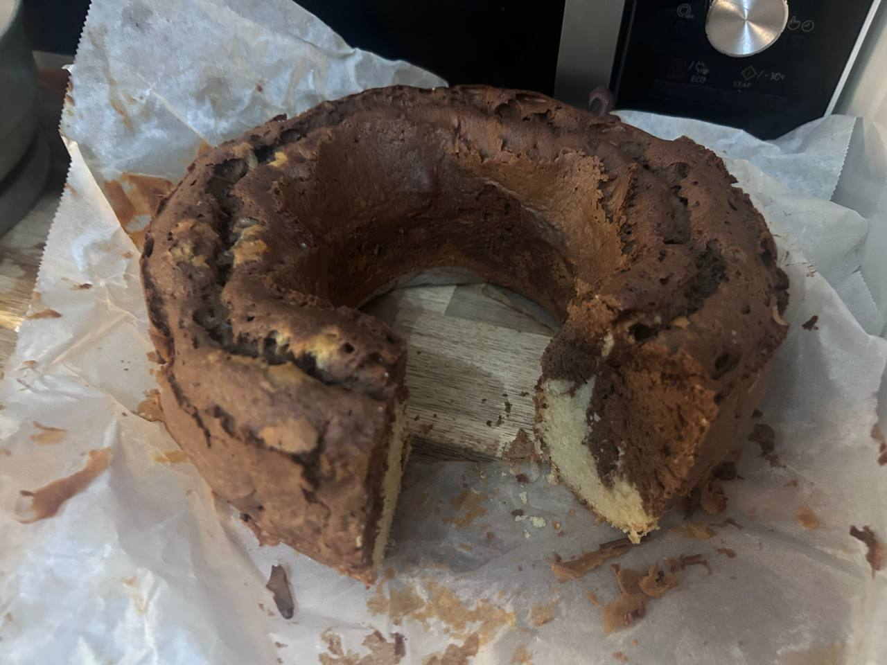

← Recettes

Marbré Chocolat
✅ Testée
👨🍳 Recette familiale
🤖 Monsieur Cuisine
⏱️ 1h
👥 8 pers.
🍰 Dessert
Ingrédients
- 250 g de farine (type 45)
- 170 g de sucre fin
- 150 g de beurre (sorti à l'avance)
- 50 g de lait (UHT 1,5% MG)
- 70 g de chocolat noir pâtissier (ou 25 g de cacao en poudre)
- 4 œufs (calibre M)
- 10 g de levure chimique (1 sachet)
- 5 g de sucre vanillé
Préparation
-
1Préchauffer le four à 170°C (th. 5/6).
-
2Chemiser un moule à cake ou à savarin avec du papier sulfurisé et le beurrer au pinceau avec du beurre fondu.
-
3Mettre tous les ingrédients sauf le chocolat dans la cuve du Monsieur Cuisine. Mélanger 1 min / vitesse 5.
-
4Verser la moitié de la pâte dans le moule préparé.
-
5Faire fondre le chocolat cassé en morceaux (micro-ondes 30 sec par 30 sec en remuant, ou bain-marie). Laisser tiédir 1-2 min.
-
6Ajouter le chocolat fondu à la pâte restée dans la cuve. Mélanger 30 sec / vitesse 5.
-
7Verser la pâte chocolatée sur la pâte nature dans le moule. Donner un coup de fourchette en zigzag pour l'effet marbré 🎨
-
8Enfourner 45-50 min. Vérifier la cuisson avec la pointe d'un couteau.
Notes
- Si tu n'as pas de cacao en poudre, utilise 70 g de chocolat noir fondu à la place (règle : ×3 le poids du cacao)
- Avec du chocolat au lait : 80-90 g et réduire le sucre à 150 g
- Sortir le beurre à l'avance pour qu'il soit bien mou
- Fonctionne aussi dans un moule à savarin (résultat testé et approuvé ! 🤩)
- Recette testée par Camille — mai 2026